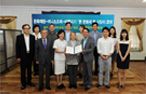

본문 컨텐츠 영역
교류활동
아름지기는 국내외 기업 및 교육기관, 재단 등과 교류하며 우리 문화를 세계에 알리는 밑거름이 되고자 합니다.
- ㈜리치몬트코리아 까르띠에
- 문화재청-이니스프리
- 서울디자인재단
- 종로구청
- 한국전통문화학교
- 파트리무안재단
-
㈜리치몬트코리아 까르띠에 MOU 체결
지난 7월 9일, 재단법인 아름지기와 ㈜리치몬트코리아 까르띠에의 뜻 깊은 만남이 아름지기 사옥에서 있었습니다. 프랑스 메세나의 모범으로 알려진 까르띠에의 정신이 아름지기의 정신과 만나, 우리 전통 문화의 가치를 널리 알리고 새로운 문화적 자산을 만들어 가기 위한 발걸음을 내딛기 위해 업무협력 협약을 체결했습니다. (까르띠에는 브랜드로부터 완벽한 독립된 현대미술재단 운영을 통해 신진예술가 및 작품활동 등 지속적인 현대미술 후원을 아끼지 않고 있는 기업입니다.)[2015-07-09]
-
문화재청-이니스프리와 업무협약(MOU) 체결

재단법인 아름지기는 7월 18일 덕수궁 중명전에서 문화재청과 이니스프리(Innisfree)와 함께 제주 지역의 천연기념물 안내판 개선, 문화재 지킴이 활동을 전개하기 위한 '한 문화재 한 지킴이' 협약을 체결했다. 이니프스리는 안내판의 디자인과 설치 비용을 후원하고 임직원들이 봉사에 참여하기로 했으며, 아름지기는 지난 문화재 안내판 사업에서 축적된 경험과 전문성을 바탕으로 제주도의 문화재 안내판 개선 사업을 주관한다.[2014-07-18]
-
서울디자인재단과 업무협약(MOU) 체결
지난 4월 5일, 아름지기는 ‘정자나무 가꾸기’ 사업의 공동 진행을 목적으로 서울디자인재단과 업무협력협약서를 체결했다. 서울디자인재단은 서울시가 디자인 산업 발전을 목적으로 출연한 기관으로, 아름지기와 상호 협력하여 디자인을 통한 마을 공동체의 회복 및 지역 커뮤니티 구축을 위해 각종 사업과 교육체계 마련을 위해 협조하기로 했다. 업무협력 분야는 아름지기의 재단 설립 초기부터 장기적으로 진행해온 ‘정자나무 가꾸기’ 사업이며, 아름지기와 서울디자인재단은 ‘마을 정자나무...[2013-04-05]
더보기 -
종로구청과 업무협약(MOU) 체결
종로구(구청장 김영종)와 재단법인 아름지기(이사장 신연균)는 한국성이 담긴 이 시대의 공공건축물의 선례를 만들어 도시문화 환경개선 및 주민들의 삶의 질 향상에 기여하기 위한 취지로 지난 4월 4일 업무협약을 체결하였다. 이번 협약은 서인사마당 복합문화시설의 건축 설계 아이디어안을 포함하는 공모전(헤리티지 투모로우 프로젝트)을 시행하여 그 결과물을 종로구에 기증하고, 헤리티지투모로우상(1등상)에 ‘종로구청장상’을 명시하며, 종로구와 (재)아름지기는 공모전 등 함께 진행하는...[2012-04-04]
더보기 -
한국전통문화학교와 산학협력 협약 체결
재단법인 아름지기는 2009년 3월 19일(목) 오후 2시 한국전통문화학교에서, 한국전통문화학교(총장 이종철) 및 재단법인 화동문화재단(이사장 홍석현)과 문화재 전문인력의 양성과 기간 상호간 연계발전을 위한 협력 등을 내용으로 하는 산학협력 협약을 체결하였습니다. 이번 협약은 아름지기가 추구하는 전통문화의 보존과 교육 및 창조적 계승이라는 전통문화 지킴이로서의 비전, 화동문화재단이 펼쳐온 문화 발전을 위한 장학사업 및 학문연구, 그리고 한국전통문화학교가 지향하는 전통문화 천년...[2009-03-19]
더보기 -
파트리무안 재단 자매결연 협정
파트리무안 재단은 프랑스 문화재, 특히 보호받지 못하고 있는 문화재들을 재발견하고 보존·보수하는 임무를 의회로부터 부여받았다. 이에 따라 퐁다시옹 파트리무안은 문화재 보존을 위한 모든 공적·사적 역량을 결집하고 필요한 재정을 충원하는 것을 목적으로 하고 있다. 퐁다시옹 파트리무안은 국가적 요구에 따라 목적을 같이 하는 다른 모든 행위자들과 함께 기업 및 지역의 후원을 증진시키는데 주력하고 있다. 아름지기 재단은 모든 형태의 문화재를 보존·보호하고 문화재에...[2002-03-15]
더보기